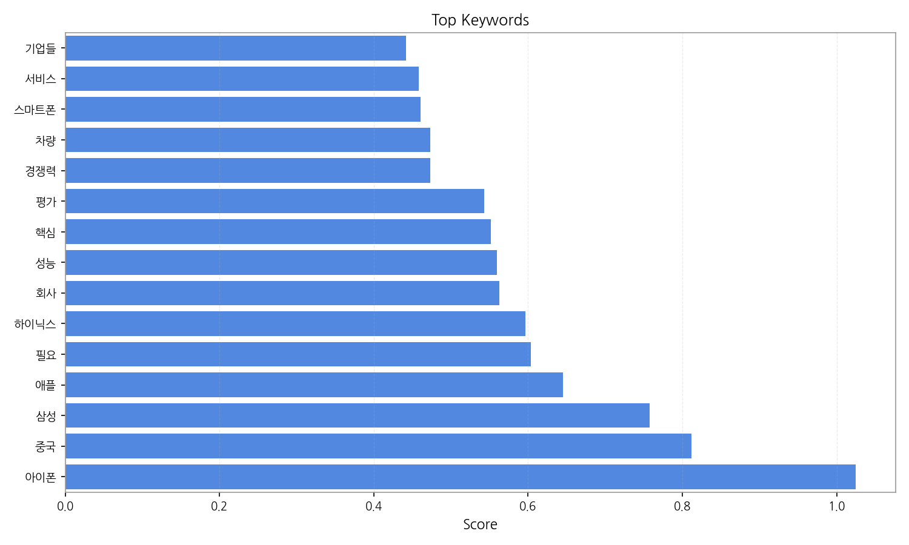
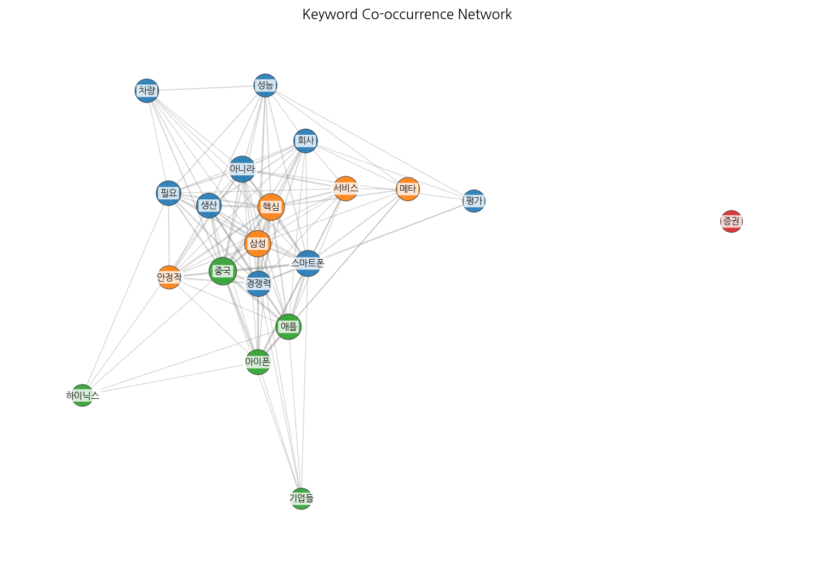
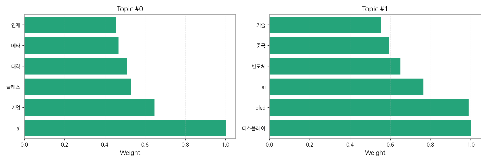
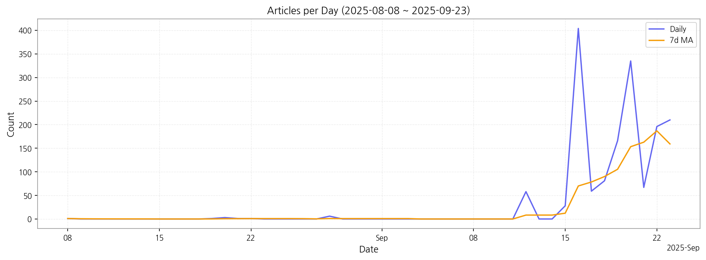

1. 핵심 맥락:
2. 최근 변화/스파이크:
3. 실무 인사이트:
| Rank | Keyword | Score |
|---|---|---|
| 1 | 아이폰 | 1.025 |
| 2 | 중국 | 0.812 |
| 3 | 삼성 | 0.758 |
| 4 | 애플 | 0.645 |
| 5 | 필요 | 0.603 |
| 6 | 하이닉스 | 0.597 |
| 7 | 회사 | 0.562 |
| 8 | 성능 | 0.559 |
| 9 | 핵심 | 0.551 |
| 10 | 평가 | 0.543 |
| 11 | 경쟁력 | 0.473 |
| 12 | 차량 | 0.473 |
| 13 | 스마트폰 | 0.461 |
| 14 | 서비스 | 0.458 |
| 15 | 기업들 | 0.442 |




1. 핵심 맥락:
2. 최근 변화/스파이크:
3. 실무 인사이트:
| Idea | Target | Value Prop | Score |
|---|---|---|---|
| 초고해상도 마이크로 OLED 기반 AR 글래스용 디스플레이 모듈 | 북미 빅테크 기업 (AR/VR 기기 제조사) | 초고해상도 (4000 PPI 이상) 마이크로 OLED 기술, 소형/경량 디자인, 저전력 소비, 높은 명암비 및 색재현율, 몰입감 극대화 | 4.50 |
| AI 기반 개인 맞춤형 차량용 HUD 솔루션 | 글로벌 완성차 OEM (프리미엄 브랜드 중심) | AI 기반 운전자 맞춤형 정보 제공 (운전 습관 분석, 위험 예측, 최적 경로 안내), 증강현실 기술을 활용한 직관적인 정보 시각화, 안전 운전 지원 및 사용자 경험 극대화 | 4.20 |
| AI 기반 디스플레이 공정 자동화 및 수율 예측 솔루션 | 국내외 디스플레이 제조사 | AI 기반 실시간 공정 데이터 분석, 수율 예측 및 불량 감지, 공정 조건 최적화, 생산 비용 절감, 생산성 향상 | 4.00 |
| IT 기기용 스트레처블 OLED 패널 | 글로벌 IT 기기 제조사 (노트북, 태블릿, 스마트폰) | 자유로운 폼팩터 디자인, 뛰어난 내구성, 얇고 가벼운 무게, 높은 화질, 새로운 사용자 경험 제공 | 3.80 |
| 퀀텀닷 컬러 필터 기반 고색재현율 LCD | 글로벌 TV 제조사, 모니터 제조사 | 친환경 퀀텀닷 소재 사용, 넓은 색 영역 (DCI-P3 99% 이상), 높은 휘도, 뛰어난 시야각, 기존 LCD 생산 라인 활용 가능 | 3.50 |